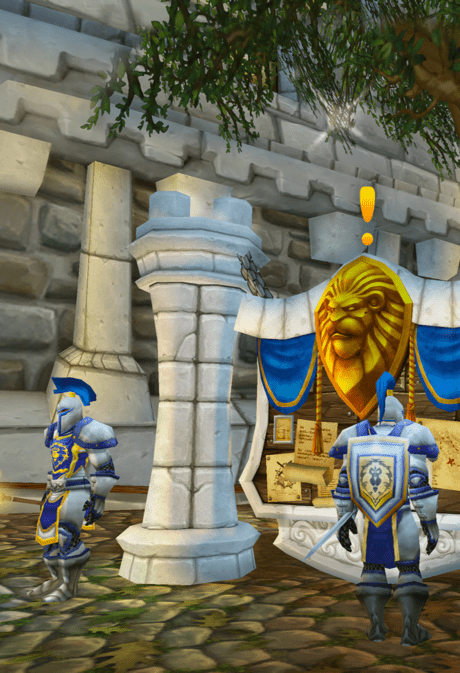
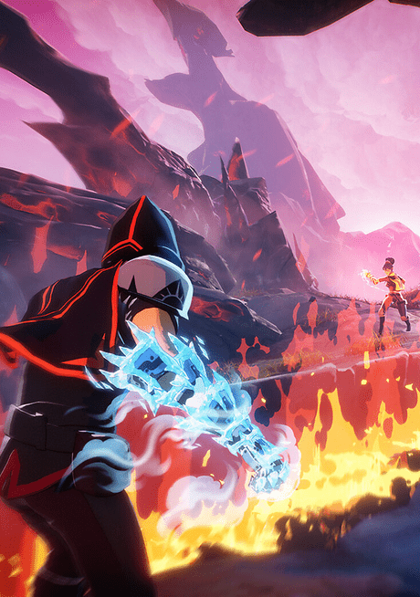
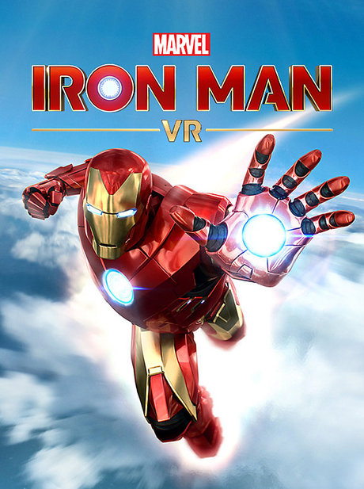
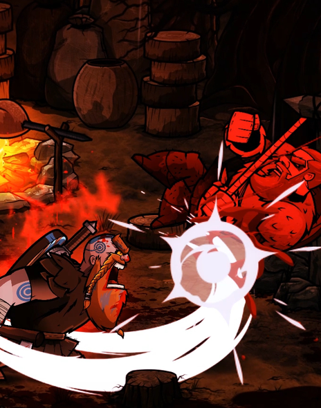
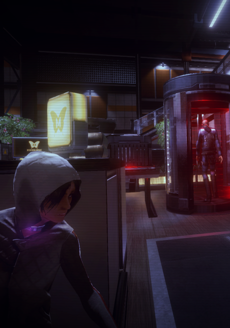
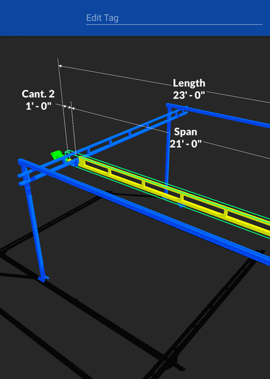

World of Warcraft
World of Warcraft is one of the most successful MMO games of all time, home to the rich fantasy world of Azeroth and millions of players each week. My contributions across engineering teams and initiatives have led to many improvements including new engine/editor features and modern streamlining of systems, tools, and workflows.
- Planning, implementing, and incrementally delivering on a multi-year overhaul of a core engine system.
- Informing stakeholders through providing estimates, adjusting for discovered work, and providing metrics to evaluate the impact / justify the business cost of undertaking large tasks.
- Leading a 4-engineer project to define and implement a spec to replace a critical tool with a highly upgraded version with reusable features. Final deliverable decreased designer time spent on some tasks by >80% via increased stability, usability, and new capabilities.
Spellbreak
Spellbreak is a cross-platform, fast-paced multiplayer magical combat game where players are battlemages fighting for glory in a high-fantasy setting. I worked on the Core Tech team of engineers to define, develop, and maintain engine-level features and optimizations for our custom version of Unreal engine. This included involvement in art tools, content pipelines, telemetry, bug fixes, and more.
- Led hot-patching team of 5 engineers to reduce lead time for update publishing by ~75% and establish a direct content delivery pipeline on consoles.
- Shadowing and maintaining relationships with artists to understand their processes and pain points to be able to provide solutions and improvements to our art pipeline such as increased editor stability and faster iteration on vfx and foliage.
- Impacting features and processes used by the entire >100 member development team such as build status notifications and branch switching processes.
Marvel's Iron Man VR
Marvel's Iron Man VR is a free-flying first person shooter game telling the personal and heroic story of Tony Stark in a full-length campaign. I was most involved in the PS4-specific features, build process, and optimization including memory, performance, and profiling.
- Working as a tightly-knit team across several timezones to meet firm deadlines and satisfy enourmous expectations for a world-class IP.
- Improving user experience by creating a system to reduce initial install time/download size of the game by ~70% by adding the capability for content to download in the background during gameplay.
- Creating cross-disciplinary tools and trackers used by QA, art, and production to record, budget, and analyze the performance of the game.
Wulverblade
Wulverblade is an action-packed and bloody 2D sidescrolling beat 'em up game for PC and consoles. I worked collaboratively toward our multi-platform release as the main development force behind the PS4 version and took charge over much of the continued updates across all platforms after release.
- Deeply invested in delivering highly polished releases under tight deadlines for all 4 platforms (Switch, PS4, Xbox One, & Steam).
- Working with platform partners to submit over 16 updates and a physical version.
- Responsible for implementing and maintaining many key systems: PS4 platform, drop-out co-op, Japanese localization, and more.
République
République is "the original AAA mobile game"; an episodic, console-quality, narrative-driven stealth adventure game for mobile devices also available on consoles and PC. My work throughout the game's development includes gameplay scripting & development, bugfixing, and performance optimization across all 5 episodes.
- Porting portions of internal and third-party systems to work on different platforms such as console and VR.
- Taking ownership of and creating succinct documentation for platform-unique implementations of core systems such as save data and xml serialization.
- Re-writing the saving system to be multithreaded and increase speed/performance by 8x without breaking/converting existing saves.
Crane Brain 3D
Crane Brain 3D is a visual sales tablet and desktop application for Gorbel Industries that enables sales employees to quickly generate product renderings in a configurable 3D space. My involvement with the app development covered many areas, including special attention to data storage/security and the art pipeline.
- Ensuring stability and security of pricing/sales tool that regularly handles transactions valued above tens of thousands of dollars.
- Enabling capability of one-click export from application to production as well offline accessibility.
- Achieved extensible "decoration" art pipeline allowing for 28+ unique realistically-scalable decorations designed with instanced rendering in mind.